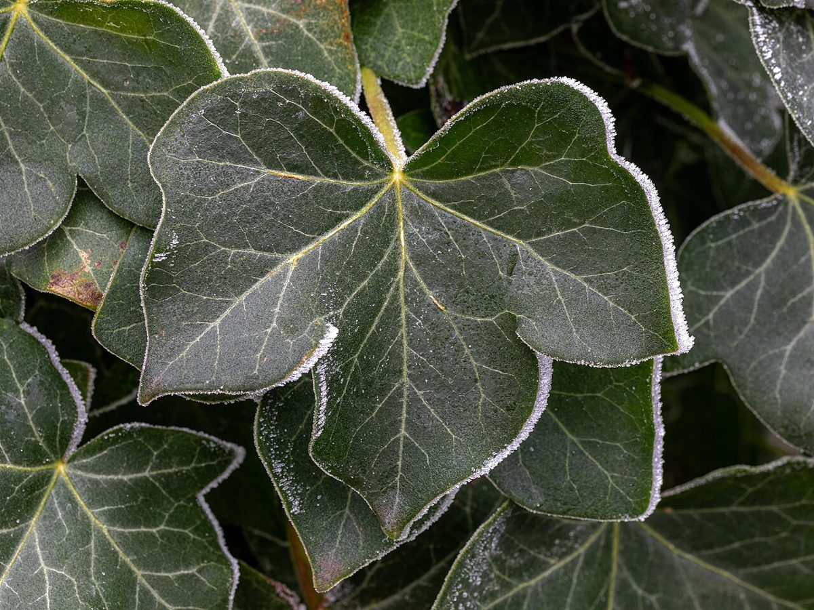
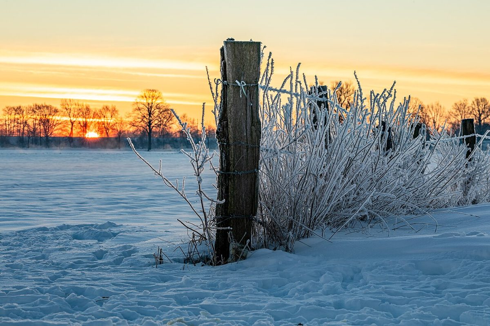
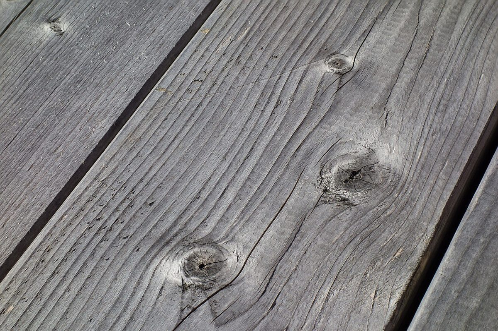

店のこと
店のこと
お店について確認できているのは、所在地とInstagramのアカウントだけです。
この「白い息の境目」というテーマは、制作側が屋号・業種・土地の名前から連想した読み物です。お店の理念や店名の由来とは無関係で、お店の実際の様子やメニューを示すものでもありません。
確認できていること
- 店名は「CaféANNON(カフェあんのん)」、業種はカフェ
- 所在地は青森県三沢市幸町1丁目8-1(〒033-0011)
- 電話番号はなし。連絡はInstagramから
- 営業時間・定休日・メニュー・価格・ご予約・駐車場は準備中

想像してみる(制作側の創作)
白い息が、見えなくなるまで。
ここから先は、制作側の想像です。お店の実際の様子とは関係がありません。

冷えた朝に、外で吐いた息は白い。
けれど扉を開けたところで、息はふっと見えなくなる。そんな境目の一瞬を、気温の目盛りに置き換えてみました。-5℃の霜の朝から、窓辺で飲み物を手にする18℃の時間まで。店内がどんな雰囲気なのか、何が味わえるのかは、このサイトでは分かっていません。
お店の雰囲気や由来、こだわりは、Instagramやお店の方のお話から差し替えていくのがいちばん確かです。このページは、その入れ物としての試作です。
